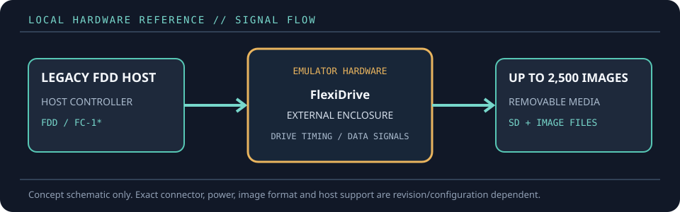

[ FLOPPY EMULATORS // IDENTIFIED HARDWARE ]
FlexiDriveMV-SD Multi-Volume Emulator
A model-specific record for a physical floppy-drive emulator. It distinguishes the emulator hardware, removable media and host-facing drive signals; firmware support alone does not establish compatibility with a particular machine.

MODEL IDENTIFICATION: PRODUCT RECORD: FlexiDriveMV-SD Multi-Volume Emulator. Compatibility is conditional on the actual host’s connector, controller, signal conventions, drive geometry, firmware and media configuration; do not infer fit from connector count or nominal drive size alone.
Recorded specifications
| Cataloged part | FlexiDriveMV-SD Multi-Volume Emulator |
|---|---|
| Manufacturer / project | FlexiDrive |
| Product family | Industrial multi-volume SD floppy-drive replacement |
| Drive bay / physical fit | External enclosed unit; replaces compatible 3.5- or 5.25-inch drives, with 8-inch applications requiring the separate TEAC FC-1 SCSI interface board. |
| Host interface / power | Legacy floppy host data/power connection plus SD card socket; onboard two-line 16-character LCD and four selection keys. Software-configurable without jumpers. |
| Removable media / image format | SD card stores up to 2,500 virtual disks. Standard .IMA/.IMG disk images are managed as files; product information lists DOS-compatible and custom/non-DOS formats including 1.44 MB, 1.2 MB, 800 KB, 720 KB and 360 KB. |
| Host compatibility | CNC, robotics, textile machinery and other industrial/technical hosts with an appropriate floppy interface and matching image geometry; examples include ABB, KUKA, COMAU and Kawasaki robotics applications. Confirm the exact host profile. |
| Variants and identification | Multi-Volume “MV” model with image navigation/display, distinct from the FlexiDriveS-SD single-volume version. Confirm firmware/configuration for custom or nonstandard host formats. |
Compatibility and handling
- Manufacturer lists up to 2,500 virtual disks per SD card; this is an image collection capacity, not a guarantee that every machine can select or read each format.
- The TEAC FC-1 SCSI interface board needed for specified SCSI/8-inch configurations is not included.
- Use only image files and geometries supported by the installed firmware and the target controller; retain backups of the card.
Before installation, compare the emulator’s exact revision and interface against the host service documentation. Confirm connector keying and pin one, power voltage/polarity, drive select, motor/disk-change signals, expected density and image geometry. Preserve a read-only copy of original disk images and configuration files before experimenting.
Model notes
Multi-Volume “MV” model with image navigation/display, distinct from the FlexiDriveS-SD single-volume version. Confirm firmware/configuration for custom or nonstandard host formats.
SD card stores up to 2,500 virtual disks. Standard .IMA/.IMG disk images are managed as files; product information lists DOS-compatible and custom/non-DOS formats including 1.44 MB, 1.2 MB, 800 KB, 720 KB and 360 KB.
Sources & further reading
- FlexiDrive — FlexiDriveMV-SD product specificationManufacturer specification for the multi-volume model, image formats, capacity and controls.
- FlexiDrive — product overviewManufacturer overview of drive replacement applications and media options.
Manufacturer statements describe product capability, not guaranteed operation on every revision of the named host. Confirm current manual, firmware and wiring before installation.